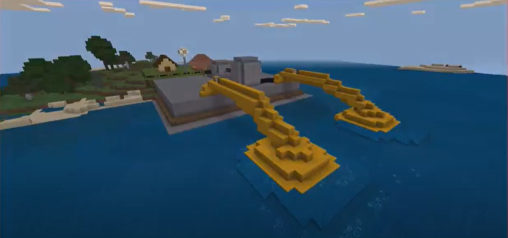

Energia: Uma aventura minecraft
Momento 1
Inicia-se a aula com um vídeo que mostra alguns aspectos sociais de Energia, mostrando como sua manipulação impactou a sociedade e sua importância na vida cotidiana. Em seguida ergue-se um debate a respeito de como conseguir Energia e se é possível produzi-la do nada.
Momento 2
De forma expositiva e dialogada, o professor apresenta a ideia de Geradores e Receptores de Eletricidade mostrando suas características, equações e comportamento gráfico.
-
Aspectos ambientais
Como encerramento, o professor lança o desafio: Como os Geradores produzem Eletricidade?
Em seguida propõe o seguinte Projeto:
Em equipe vocês deverão construir um modelo que represente as formas de geração de eletricidade, cada equipe deve produzirá o modelo de uma das fontes abaixo: